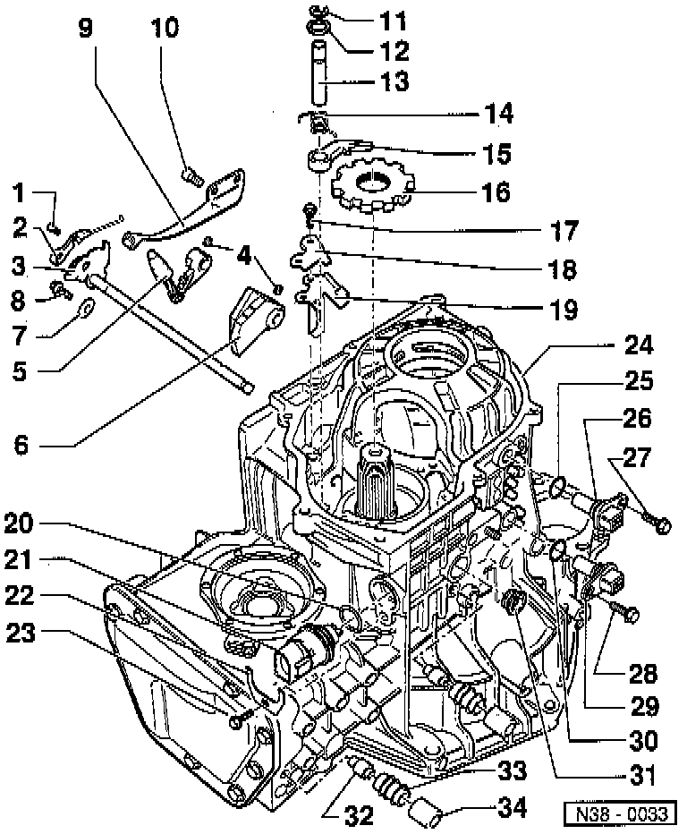

Vehicle Speed Sensor: Diagrams

LEGEND
1 Bolt
2 Manual selector valve control
3 Selector shaft with selector segment
4 Spring pin
5 Engaging lever
6 Detent segment
7 Locking washer
8 Bolt
9 Spring for selector segment
10 Bolt
11 O-ring
12 Washer
13 Shaft for detent lever
14 Return spring
15 Detent lever
16 Parking lock gear
17 Bolt
18 Supporting plate
19 Guide plate
20 O-ring
21 Multi-function Transmission Range (TR) Switch
22 Bracket
23 Bolt
24 Transmission housing
25 O-ring
26 Vehicle Speed Sensor (VSS)
27 Bolt
28 Bolt
29 Transmission Vehicle Speed Sensor (VSS)
30 O-ring
31 O-ring
32 Breather tube
33 Breather
34 Breather cap